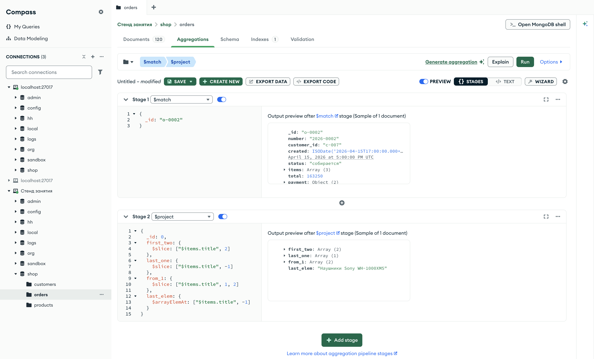

Справочник по MongoDB · модуль 5 · выражения над массивами
5.1
$arrayElemAt, $slice
и $size
Глава открывает модуль о выражениях над массивами. Выражение работает внутри одного документа и не меняет число документов в потоке — этим оно отличается от стадии $unwind из главы 4.6. Разобраны три выражения: $arrayElemAt берёт элемент по номеру, $slice — часть массива, $size — длину. Отдельно показано, что сервер возвращает за границей массива и какие аргументы он не принимает.
- Категория
- Агрегация
- Уровень
- Начальный
- Связанные темы
- $project (глава 4.2), $unwind (глава 4.6), $group (глава 4.4), $first и $last (глава 4.7), номер элемента в пути фильтра (глава 2.6)
- Зачем это знать
- Брать из массива нужный элемент или его часть, не разворачивая массив в отдельные документы, и узнавать длину массива для расчётов и группировки
Как запускать примеры этой главы
mongodb-glava-5.1-python.zip, 64 КБmongodb-glava-5.1-ruby.zip, 64 КБmongodb-glava-5.1-go.zip, 72 КБmongodb-glava-5.1-cpp.zip, 69 КБ — все примеры главы готовыми программами, базы и стенд в Docker. В README.md — запуск в Docker, если Compass нет или он не подключается, и на установленном сервере с Compass, а также что должна напечатать каждая программа.lessons/ch5_1.py — пример вставляется в конец файлаlessons/ch5_1.rb — пример вставляется в конец файлаlessons/ch5_1.go — пример внутрь скобок в конце main, функции и типы — выше mainlessons/ch5_1.cpp — пример внутрь скобок в конце main, функции — выше maincd lessons, затем python ch5_1.pycd lessons, затем python3 ch5_1.py · в Docker: docker compose run --rm python lessons/ch5_1.pycd lessons, затем ruby ch5_1.rb · в Docker: docker compose run --rm ruby lessons/ch5_1.rbcd lessons, затем go run ch5_1.go · в Docker: docker compose run --rm go lessons/ch5_1.gocd lessons, затем g++ -std=c++17 ch5_1.cpp -o prog $(pkg-config --cflags --libs libmongocxx1) && ./prog · в Docker: docker compose run --rm cpp lessons/ch5_1.cpp§1Номер элемента: $arrayElemAt
В накладной позиции пронумерованы. Чтобы назвать первую позицию, накладную не разрезают на строки — смотрят строку с нужным номером. С конца считают так же: последняя, предпоследняя.
В заказе магазина позиции лежат в массиве items. В главе 4.6 массив разворачивали стадией $unwind: каждая позиция становилась отдельным документом, и из одного заказа получалось несколько. В этом модуле массив обрабатывается внутри документа. Для этого служат выражения над массивами — операторы, которые получают массив и возвращают значение: элемент, часть массива, число. Выражение записывается в стадии $project, $set или $group на месте значения поля, как $multiply в главе 4.2. Число документов в потоке от выражения не меняется.
Выражение $arrayElemAt возвращает элемент массива по номеру: {"$arrayElemAt": [массив, номер]}. Номера идут с нуля: у первого элемента номер 0, у второго — 1. Отрицательный номер считается с конца: −1 — последний элемент, −2 — предпоследний.
Первым аргументом в примере стоит путь "$items.title". Путь к полю элементов массива возвращает массив значений этого поля — по одному от каждой позиции, в том же порядке. Пример выводит этот массив в поле titles, а рядом — его первый и последний элемент у заказа 2026-0002.
pipeline = [
{"$match": {"_id": "o-0002"}},
{"$project": {
"_id": 0,
"number": 1,
"titles": "$items.title",
"first": {"$arrayElemAt": ["$items.title", 0]},
"last": {"$arrayElemAt": ["$items.title", -1]},
}},
]
for doc in orders.aggregate(pipeline):
print(doc)
mongocxx::pipeline pipeline; pipeline.match(make_document(kvp("_id", "o-0002"))); pipeline.project(make_document( kvp("_id", 0), kvp("number", 1), kvp("titles", "$items.title"), kvp("first", make_document(kvp("$arrayElemAt", make_array("$items.title", 0)))), kvp("last", make_document(kvp("$arrayElemAt", make_array("$items.title", -1)))))); for (auto&& doc : orders.aggregate(pipeline)) { std::cout << bsoncxx::to_json(doc, bsoncxx::ExtendedJsonMode::k_relaxed) << std::endl; }
pipeline := mongo.Pipeline{
{{Key: "$match", Value: bson.D{{Key: "_id", Value: "o-0002"}}}},
{{Key: "$project", Value: bson.D{
{Key: "_id", Value: 0},
{Key: "number", Value: 1},
{Key: "titles", Value: "$items.title"},
{Key: "first", Value: bson.D{{Key: "$arrayElemAt", Value: bson.A{"$items.title", 0}}}},
{Key: "last", Value: bson.D{{Key: "$arrayElemAt", Value: bson.A{"$items.title", -1}}}}}}},
}
cursor, _ := orders.Aggregate(ctx, pipeline)
for cursor.Next(ctx) {
var doc bson.D
cursor.Decode(&doc)
out, _ := bson.MarshalExtJSON(doc, false, false)
fmt.Println(string(out))
}
pipeline = [
{ "$match" => { "_id" => "o-0002" } },
{ "$project" => {
"_id" => 0,
"number" => 1,
"titles" => "$items.title",
"first" => { "$arrayElemAt" => ["$items.title", 0] },
"last" => { "$arrayElemAt" => ["$items.title", -1] },
} },
]
orders.aggregate(pipeline).each { |doc| puts doc.inspect }
{'number': '2026-0002', 'titles': ['Ноутбук ASUS VivoBook 15', 'Веб-камера Logitech C920', 'Наушники Sony WH-1000XM5'], 'first': 'Ноутбук ASUS VivoBook 15', 'last': 'Наушники Sony WH-1000XM5'}
{ "number" : "2026-0002", "titles" : [ "Ноутбук ASUS VivoBook 15", "Веб-камера Logitech C920", "Наушники Sony WH-1000XM5" ], "first" : "Ноутбук ASUS VivoBook 15", "last" : "Наушники Sony WH-1000XM5" }
{"number":"2026-0002","titles":["Ноутбук ASUS VivoBook 15","Веб-камера Logitech C920","Наушники Sony WH-1000XM5"],"first":"Ноутбук ASUS VivoBook 15","last":"Наушники Sony WH-1000XM5"}
{"number"=>"2026-0002", "titles"=>["Ноутбук ASUS VivoBook 15", "Веб-камера Logitech C920", "Наушники Sony WH-1000XM5"], "first"=>"Ноутбук ASUS VivoBook 15", "last"=>"Наушники Sony WH-1000XM5"}
В titles три названия — по числу позиций заказа. first — элемент с номером 0, ноутбук ASUS. last — элемент с номером −1, наушники Sony. Заказ остался одним документом: позиции не разворачивались.
Над элементом — номер от начала, под ним — номер от конца. Зелёным отмечен элемент для номера 0 (first), фиолетовым — для номера −1 (last). У массива из трёх элементов номера 2 и −1 указывают на один элемент.
Отрицательный номер удобен, когда длина массива у документов разная: −1 указывает на последний элемент и у заказа из одной позиции, и у заказа из четырёх.
§2Элемент-документ и путь с номером
Элемент массива items — документ позиции с пятью полями. $arrayElemAt по самому массиву "$items" возвращает такой документ целиком.
В главе 2.6 в фильтре номер элемента записывали прямо в путь через точку: {"items.0.category": "ноутбуки"} отбирает заказы, у которых первая позиция — ноутбук. Пример проверяет, работает ли та же запись в выражении: поле by_path получает путь "$items.0.title".
pipeline = [
{"$match": {"_id": "o-0002"}},
{"$project": {
"_id": 0,
"first_item": {"$arrayElemAt": ["$items", 0]},
"by_path": "$items.0.title",
}},
]
for doc in orders.aggregate(pipeline):
print(doc)
mongocxx::pipeline pipeline; pipeline.match(make_document(kvp("_id", "o-0002"))); pipeline.project(make_document( kvp("_id", 0), kvp("first_item", make_document(kvp("$arrayElemAt", make_array("$items", 0)))), kvp("by_path", "$items.0.title"))); for (auto&& doc : orders.aggregate(pipeline)) { std::cout << bsoncxx::to_json(doc, bsoncxx::ExtendedJsonMode::k_relaxed) << std::endl; }
pipeline := mongo.Pipeline{
{{Key: "$match", Value: bson.D{{Key: "_id", Value: "o-0002"}}}},
{{Key: "$project", Value: bson.D{
{Key: "_id", Value: 0},
{Key: "first_item", Value: bson.D{{Key: "$arrayElemAt", Value: bson.A{"$items", 0}}}},
{Key: "by_path", Value: "$items.0.title"}}}},
}
cursor, _ := orders.Aggregate(ctx, pipeline)
for cursor.Next(ctx) {
var doc bson.D
cursor.Decode(&doc)
out, _ := bson.MarshalExtJSON(doc, false, false)
fmt.Println(string(out))
}
pipeline = [
{ "$match" => { "_id" => "o-0002" } },
{ "$project" => {
"_id" => 0,
"first_item" => { "$arrayElemAt" => ["$items", 0] },
"by_path" => "$items.0.title",
} },
]
orders.aggregate(pipeline).each { |doc| puts doc.inspect }
{'first_item': {'sku': 'SKU-NB-002', 'title': 'Ноутбук ASUS VivoBook 15', 'category': 'ноутбуки', 'qty': 1, 'price': 51490}, 'by_path': []}
{ "first_item" : { "sku" : "SKU-NB-002", "title" : "Ноутбук ASUS VivoBook 15", "category" : "ноутбуки", "qty" : 1, "price" : 51490 }, "by_path" : [ ] }
{"first_item":{"sku":"SKU-NB-002","title":"Ноутбук ASUS VivoBook 15","category":"ноутбуки","qty":1,"price":51490},"by_path":[]}
{"first_item"=>{"sku"=>"SKU-NB-002", "title"=>"Ноутбук ASUS VivoBook 15", "category"=>"ноутбуки", "qty"=>1, "price"=>51490}, "by_path"=>[]}
first_item — документ первой позиции со всеми полями: sku, title, category, qty, price. by_path — пустой массив. В выражении цифра в пути не считается номером элемента: сервер ищет у каждой позиции поле с именем 0, не находит его ни у одной и возвращает пустой массив.
| Где записано | Запись | Как сервер читает 0 | Результат для 2026-0002 |
|---|---|---|---|
| фильтр (глава 2.6) | "items.0.title" | номер элемента | Ноутбук ASUS VivoBook 15 |
| выражение | "$items.0.title" | имя поля «0» у каждой позиции | [] |
| выражение | $arrayElemAt ["$items.title", 0] | номер элемента | Ноутбук ASUS VivoBook 15 |
Сервер не сообщает об ошибке: пустой массив — допустимое значение. Поэтому запись с цифрой в выражении легко пропустить при проверке.
В выражении элемент по номеру берут только через $arrayElemAt. Поле элемента берут путём к полю массива, как "$items.title" в §1, а не путём от элемента.
§3Номер за границей массива
Если в накладной три строки, четвёртой строки в ней нет. Ответ «четвёртой позиции нет» отличается от ответа «четвёртая позиция пустая».
У заказов разное число позиций: у 2026-0001 одна, у 2026-0004 четыре. Пример запрашивает четвёртую позицию (номер 3) у пяти заказов. Второе поле, fourth_or, оборачивает то же выражение в $ifNull: {"$ifNull": [выражение, замена]} возвращает значение выражения, а если значения нет или оно null — замену.
pipeline = [
{"$match": {"_id": {"$in": ["o-0001", "o-0002", "o-0003", "o-0004", "o-0005"]}}},
{"$project": {
"_id": 0,
"number": 1,
"fourth": {"$arrayElemAt": ["$items.title", 3]},
"fourth_or": {"$ifNull": [{"$arrayElemAt": ["$items.title", 3]}, "нет"]},
}},
]
for doc in orders.aggregate(pipeline):
print(doc)
mongocxx::pipeline pipeline; pipeline.match(make_document( kvp("_id", make_document( kvp("$in", make_array("o-0001", "o-0002", "o-0003", "o-0004", "o-0005")))))); pipeline.project(make_document( kvp("_id", 0), kvp("number", 1), kvp("fourth", make_document(kvp("$arrayElemAt", make_array("$items.title", 3)))), kvp("fourth_or", make_document( kvp("$ifNull", make_array( make_document(kvp("$arrayElemAt", make_array("$items.title", 3))), "нет")))))); for (auto&& doc : orders.aggregate(pipeline)) { std::cout << bsoncxx::to_json(doc, bsoncxx::ExtendedJsonMode::k_relaxed) << std::endl; }
pipeline := mongo.Pipeline{
{{Key: "$match", Value: bson.D{
{Key: "_id", Value: bson.D{
{Key: "$in", Value: bson.A{"o-0001", "o-0002", "o-0003", "o-0004", "o-0005"}}}}}}},
{{Key: "$project", Value: bson.D{
{Key: "_id", Value: 0},
{Key: "number", Value: 1},
{Key: "fourth", Value: bson.D{{Key: "$arrayElemAt", Value: bson.A{"$items.title", 3}}}},
{Key: "fourth_or", Value: bson.D{
{Key: "$ifNull", Value: bson.A{
bson.D{{Key: "$arrayElemAt", Value: bson.A{"$items.title", 3}}},
"нет"}}}}}}},
}
cursor, _ := orders.Aggregate(ctx, pipeline)
for cursor.Next(ctx) {
var doc bson.D
cursor.Decode(&doc)
out, _ := bson.MarshalExtJSON(doc, false, false)
fmt.Println(string(out))
}
pipeline = [
{ "$match" => { "_id" => { "$in" => ["o-0001", "o-0002", "o-0003", "o-0004", "o-0005"] } } },
{ "$project" => {
"_id" => 0,
"number" => 1,
"fourth" => { "$arrayElemAt" => ["$items.title", 3] },
"fourth_or" => { "$ifNull" => [{ "$arrayElemAt" => ["$items.title", 3] }, "нет"] },
} },
]
orders.aggregate(pipeline).each { |doc| puts doc.inspect }
{'number': '2026-0001', 'fourth_or': 'нет'}
{'number': '2026-0002', 'fourth_or': 'нет'}
{'number': '2026-0003', 'fourth_or': 'нет'}
{'number': '2026-0004', 'fourth': 'Powerbank Anker 20000 мА·ч', 'fourth_or': 'Powerbank Anker 20000 мА·ч'}
{'number': '2026-0005', 'fourth_or': 'нет'}
{ "number" : "2026-0001", "fourth_or" : "нет" }
{ "number" : "2026-0002", "fourth_or" : "нет" }
{ "number" : "2026-0003", "fourth_or" : "нет" }
{ "number" : "2026-0004", "fourth" : "Powerbank Anker 20000 мА·ч", "fourth_or" : "Powerbank Anker 20000 мА·ч" }
{ "number" : "2026-0005", "fourth_or" : "нет" }
{"number":"2026-0001","fourth_or":"нет"}
{"number":"2026-0002","fourth_or":"нет"}
{"number":"2026-0003","fourth_or":"нет"}
{"number":"2026-0004","fourth":"Powerbank Anker 20000 мА·ч","fourth_or":"Powerbank Anker 20000 мА·ч"}
{"number":"2026-0005","fourth_or":"нет"}
{"number"=>"2026-0001", "fourth_or"=>"нет"}
{"number"=>"2026-0002", "fourth_or"=>"нет"}
{"number"=>"2026-0003", "fourth_or"=>"нет"}
{"number"=>"2026-0004", "fourth"=>"Powerbank Anker 20000 мА·ч", "fourth_or"=>"Powerbank Anker 20000 мА·ч"}
{"number"=>"2026-0005", "fourth_or"=>"нет"}
Поле fourth есть только у заказа 2026-0004 — единственного с четырьмя позициями. У остальных четырёх заказов поля fourth в результате нет совсем: за границей массива $arrayElemAt не возвращает значения, и поле не создаётся. Это не null. null получается в другом случае — когда у документа нет самого массива: {"$arrayElemAt": ["$nothing", 0]} даёт null.
fourth_or есть у всех пяти заказов: где позиции нет, стоит «нет». $ifNull подставляет замену в обоих случаях — и когда значения нет, и когда оно null.
| Заказ | Позиций | Номера элементов | fourth | fourth_or |
|---|---|---|---|---|
| 2026-0001 | 1 | 0 | поля нет | нет |
| 2026-0002 | 3 | 0 1 2 | поля нет | нет |
| 2026-0003 | 2 | 0 1 | поля нет | нет |
| 2026-0004 | 4 | 0 1 2 3 | Powerbank Anker 20000 мА·ч | Powerbank Anker 20000 мА·ч |
| 2026-0005 | 1 | 0 | поля нет | нет |
Номер 3 существует только у массива из четырёх и более элементов. Без $ifNull у документов разное число полей; с ним у всех одинаковое.
Отсюда правило: значение элемента, которого может не быть, проверяют через $ifNull, а не сравнением с null. Узнать заранее, есть ли элемент с нужным номером, позволяет длина массива.
§4Длина массива: $size
Чтобы узнать, сколько позиций в накладной, достаточно посмотреть номер последней строки и прибавить один. Сервер считает длину сам.
Выражение $size возвращает число элементов массива: {"$size": "$items"}. В главе 2.6 оператор $size встречался в фильтре — там он сравнивает длину с заданным числом и отбирает документы. Здесь $size — выражение: оно вычисляет длину и кладёт её в поле. Длину можно подставить в другое выражение. Пример получает последнюю позицию через номер «длина минус один» — так же, как номер −1 в §1.
pipeline = [
{"$match": {"_id": {"$in": ["o-0001", "o-0002", "o-0003", "o-0004", "o-0005"]}}},
{"$project": {
"_id": 0,
"number": 1,
"lines": {"$size": "$items"},
"last_by_size": {"$arrayElemAt": [
"$items.title",
{"$subtract": [{"$size": "$items"}, 1]},
]},
}},
]
for doc in orders.aggregate(pipeline):
print(doc)
mongocxx::pipeline pipeline; pipeline.match(make_document( kvp("_id", make_document( kvp("$in", make_array("o-0001", "o-0002", "o-0003", "o-0004", "o-0005")))))); pipeline.project(make_document( kvp("_id", 0), kvp("number", 1), kvp("lines", make_document(kvp("$size", "$items"))), kvp("last_by_size", make_document( kvp("$arrayElemAt", make_array( "$items.title", make_document(kvp("$subtract", make_array(make_document(kvp("$size", "$items")), 1))))))))); for (auto&& doc : orders.aggregate(pipeline)) { std::cout << bsoncxx::to_json(doc, bsoncxx::ExtendedJsonMode::k_relaxed) << std::endl; }
pipeline := mongo.Pipeline{
{{Key: "$match", Value: bson.D{
{Key: "_id", Value: bson.D{
{Key: "$in", Value: bson.A{"o-0001", "o-0002", "o-0003", "o-0004", "o-0005"}}}}}}},
{{Key: "$project", Value: bson.D{
{Key: "_id", Value: 0},
{Key: "number", Value: 1},
{Key: "lines", Value: bson.D{{Key: "$size", Value: "$items"}}},
{Key: "last_by_size", Value: bson.D{
{Key: "$arrayElemAt", Value: bson.A{
"$items.title",
bson.D{
{Key: "$subtract", Value: bson.A{bson.D{{Key: "$size", Value: "$items"}}, 1}}}}}}}}}},
}
cursor, _ := orders.Aggregate(ctx, pipeline)
for cursor.Next(ctx) {
var doc bson.D
cursor.Decode(&doc)
out, _ := bson.MarshalExtJSON(doc, false, false)
fmt.Println(string(out))
}
pipeline = [
{ "$match" => { "_id" => { "$in" => ["o-0001", "o-0002", "o-0003", "o-0004", "o-0005"] } } },
{ "$project" => {
"_id" => 0,
"number" => 1,
"lines" => { "$size" => "$items" },
"last_by_size" => { "$arrayElemAt" => [
"$items.title",
{ "$subtract" => [{ "$size" => "$items" }, 1] },
] },
} },
]
orders.aggregate(pipeline).each { |doc| puts doc.inspect }
{'number': '2026-0001', 'lines': 1, 'last_by_size': 'Рюкзак для ноутбука Xiaomi'}
{'number': '2026-0002', 'lines': 3, 'last_by_size': 'Наушники Sony WH-1000XM5'}
{'number': '2026-0003', 'lines': 2, 'last_by_size': 'Мышь Logitech MX Master 3S'}
{'number': '2026-0004', 'lines': 4, 'last_by_size': 'Powerbank Anker 20000 мА·ч'}
{'number': '2026-0005', 'lines': 1, 'last_by_size': 'Смартфон Xiaomi Redmi Note 13'}
{ "number" : "2026-0001", "lines" : 1, "last_by_size" : "Рюкзак для ноутбука Xiaomi" }
{ "number" : "2026-0002", "lines" : 3, "last_by_size" : "Наушники Sony WH-1000XM5" }
{ "number" : "2026-0003", "lines" : 2, "last_by_size" : "Мышь Logitech MX Master 3S" }
{ "number" : "2026-0004", "lines" : 4, "last_by_size" : "Powerbank Anker 20000 мА·ч" }
{ "number" : "2026-0005", "lines" : 1, "last_by_size" : "Смартфон Xiaomi Redmi Note 13" }
{"number":"2026-0001","lines":1,"last_by_size":"Рюкзак для ноутбука Xiaomi"}
{"number":"2026-0002","lines":3,"last_by_size":"Наушники Sony WH-1000XM5"}
{"number":"2026-0003","lines":2,"last_by_size":"Мышь Logitech MX Master 3S"}
{"number":"2026-0004","lines":4,"last_by_size":"Powerbank Anker 20000 мА·ч"}
{"number":"2026-0005","lines":1,"last_by_size":"Смартфон Xiaomi Redmi Note 13"}
{"number"=>"2026-0001", "lines"=>1, "last_by_size"=>"Рюкзак для ноутбука Xiaomi"}
{"number"=>"2026-0002", "lines"=>3, "last_by_size"=>"Наушники Sony WH-1000XM5"}
{"number"=>"2026-0003", "lines"=>2, "last_by_size"=>"Мышь Logitech MX Master 3S"}
{"number"=>"2026-0004", "lines"=>4, "last_by_size"=>"Powerbank Anker 20000 мА·ч"}
{"number"=>"2026-0005", "lines"=>1, "last_by_size"=>"Смартфон Xiaomi Redmi Note 13"}
В поле lines — длина массива: 1, 3, 2, 4, 1. last_by_size совпадает с последним элементом у каждого заказа: для 2026-0002 номер равен 3 − 1 = 2, и это наушники Sony. Запись через $subtract длиннее, чем номер −1, и даёт тот же элемент; так её пишут в исходных примерах, в книге дальше используется −1.
Длина массива — число, а по числу можно группировать. Следующий пример раскладывает все 120 заказов по числу позиций: ключ группы — выражение $size.
pipeline = [
{"$group": {"_id": {"$size": "$items"}, "orders": {"$sum": 1}}},
{"$sort": {"_id": 1}},
]
for doc in orders.aggregate(pipeline):
print(doc)
mongocxx::pipeline pipeline; pipeline.group(make_document( kvp("_id", make_document(kvp("$size", "$items"))), kvp("orders", make_document(kvp("$sum", 1))))); pipeline.sort(make_document(kvp("_id", 1))); for (auto&& doc : orders.aggregate(pipeline)) { std::cout << bsoncxx::to_json(doc, bsoncxx::ExtendedJsonMode::k_relaxed) << std::endl; }
pipeline := mongo.Pipeline{
{{Key: "$group", Value: bson.D{
{Key: "_id", Value: bson.D{{Key: "$size", Value: "$items"}}},
{Key: "orders", Value: bson.D{{Key: "$sum", Value: 1}}}}}},
{{Key: "$sort", Value: bson.D{{Key: "_id", Value: 1}}}},
}
cursor, _ := orders.Aggregate(ctx, pipeline)
for cursor.Next(ctx) {
var doc bson.D
cursor.Decode(&doc)
out, _ := bson.MarshalExtJSON(doc, false, false)
fmt.Println(string(out))
}
pipeline = [
{ "$group" => { "_id" => { "$size" => "$items" }, "orders" => { "$sum" => 1 } } },
{ "$sort" => { "_id" => 1 } },
]
orders.aggregate(pipeline).each { |doc| puts doc.inspect }
{'_id': 1, 'orders': 39}
{'_id': 2, 'orders': 34}
{'_id': 3, 'orders': 24}
{'_id': 4, 'orders': 23}
{ "_id" : 1, "orders" : 39 }
{ "_id" : 2, "orders" : 34 }
{ "_id" : 3, "orders" : 24 }
{ "_id" : 4, "orders" : 23 }
{"_id":1,"orders":39}
{"_id":2,"orders":34}
{"_id":3,"orders":24}
{"_id":4,"orders":23}
{"_id"=>1, "orders"=>39}
{"_id"=>2, "orders"=>34}
{"_id"=>3, "orders"=>24}
{"_id"=>4, "orders"=>23}
Заказов из одной позиции 39, из двух — 34, из трёх — 24, из четырёх — 23. Вместе 120: каждый заказ попал ровно в одну группу. Заказов длиннее четырёх позиций в магазине нет.
Длина полосы — число заказов в группе относительно самой большой группы (39). В главе 4.6 то же распределение потребовало бы $unwind, группировки по заказу и второй группировки; здесь хватило одной стадии.
§5Элемент массива как ключ группы
Ключом группы может быть любое выражение, в том числе элемент массива. Пример группирует заказы по категории первой позиции: {"$arrayElemAt": ["$items.category", 0]}. Сортировка — по числу заказов, при равенстве — по названию категории: у двух категорий счётчики совпадают.
pipeline = [
{"$group": {"_id": {"$arrayElemAt": ["$items.category", 0]}, "orders": {"$sum": 1}}},
{"$sort": {"orders": -1, "_id": 1}},
]
for doc in orders.aggregate(pipeline):
print(doc)
mongocxx::pipeline pipeline; pipeline.group(make_document( kvp("_id", make_document(kvp("$arrayElemAt", make_array("$items.category", 0)))), kvp("orders", make_document(kvp("$sum", 1))))); pipeline.sort(make_document(kvp("orders", -1), kvp("_id", 1))); for (auto&& doc : orders.aggregate(pipeline)) { std::cout << bsoncxx::to_json(doc, bsoncxx::ExtendedJsonMode::k_relaxed) << std::endl; }
pipeline := mongo.Pipeline{
{{Key: "$group", Value: bson.D{
{Key: "_id", Value: bson.D{{Key: "$arrayElemAt", Value: bson.A{"$items.category", 0}}}},
{Key: "orders", Value: bson.D{{Key: "$sum", Value: 1}}}}}},
{{Key: "$sort", Value: bson.D{{Key: "orders", Value: -1}, {Key: "_id", Value: 1}}}},
}
cursor, _ := orders.Aggregate(ctx, pipeline)
for cursor.Next(ctx) {
var doc bson.D
cursor.Decode(&doc)
out, _ := bson.MarshalExtJSON(doc, false, false)
fmt.Println(string(out))
}
pipeline = [
{ "$group" => {
"_id" => { "$arrayElemAt" => ["$items.category", 0] },
"orders" => { "$sum" => 1 },
} },
{ "$sort" => { "orders" => -1, "_id" => 1 } },
]
orders.aggregate(pipeline).each { |doc| puts doc.inspect }
{'_id': 'ноутбуки', 'orders': 32}
{'_id': 'периферия', 'orders': 26}
{'_id': 'комплектующие', 'orders': 25}
{'_id': 'смартфоны', 'orders': 25}
{'_id': 'аксессуары', 'orders': 12}
{ "_id" : "ноутбуки", "orders" : 32 }
{ "_id" : "периферия", "orders" : 26 }
{ "_id" : "комплектующие", "orders" : 25 }
{ "_id" : "смартфоны", "orders" : 25 }
{ "_id" : "аксессуары", "orders" : 12 }
{"_id":"ноутбуки","orders":32}
{"_id":"периферия","orders":26}
{"_id":"комплектующие","orders":25}
{"_id":"смартфоны","orders":25}
{"_id":"аксессуары","orders":12}
{"_id"=>"ноутбуки", "orders"=>32}
{"_id"=>"периферия", "orders"=>26}
{"_id"=>"комплектующие", "orders"=>25}
{"_id"=>"смартфоны", "orders"=>25}
{"_id"=>"аксессуары", "orders"=>12}
С ноутбука начинаются 32 заказа, с периферии — 26, с комплектующих и смартфонов — по 25, с аксессуаров — 12. Сумма — 120. Без второго ключа сортировки комплектующие и смартфоны могли бы меняться местами от запуска к запуску.
Тот же счёт для ноутбуков даёт фильтр из главы 2.6: {"items.0.category": "ноутбуки"} отбирает 32 заказа. Фильтр отвечает на вопрос об одной категории, группировка — сразу обо всех.
§6$first и $last над массивом
Первый и последний элемент нужны чаще остальных, поэтому для них есть короткая запись. Выражения $first и $last над массивом возвращают его первый и последний элемент: {"$first": "$items.title"} — то же, что $arrayElemAt с номером 0, {"$last": "$items.title"} — с номером −1.
Имена совпадают с аккумуляторами главы 4.7, но смысл другой. Аккумулятор $first в стадии $group берёт значение из первого документа группы. Выражение $first в $project берёт первый элемент массива внутри одного документа. Какое из двух значений получится, решает стадия, где записан оператор.
pipeline = [
{"$match": {"_id": {"$in": ["o-0001", "o-0002", "o-0003", "o-0004", "o-0005"]}}},
{"$project": {
"_id": 0,
"number": 1,
"first": {"$first": "$items.title"},
"last": {"$last": "$items.title"},
}},
]
for doc in orders.aggregate(pipeline):
print(doc)
mongocxx::pipeline pipeline; pipeline.match(make_document( kvp("_id", make_document( kvp("$in", make_array("o-0001", "o-0002", "o-0003", "o-0004", "o-0005")))))); pipeline.project(make_document( kvp("_id", 0), kvp("number", 1), kvp("first", make_document(kvp("$first", "$items.title"))), kvp("last", make_document(kvp("$last", "$items.title"))))); for (auto&& doc : orders.aggregate(pipeline)) { std::cout << bsoncxx::to_json(doc, bsoncxx::ExtendedJsonMode::k_relaxed) << std::endl; }
pipeline := mongo.Pipeline{
{{Key: "$match", Value: bson.D{
{Key: "_id", Value: bson.D{
{Key: "$in", Value: bson.A{"o-0001", "o-0002", "o-0003", "o-0004", "o-0005"}}}}}}},
{{Key: "$project", Value: bson.D{
{Key: "_id", Value: 0},
{Key: "number", Value: 1},
{Key: "first", Value: bson.D{{Key: "$first", Value: "$items.title"}}},
{Key: "last", Value: bson.D{{Key: "$last", Value: "$items.title"}}}}}},
}
cursor, _ := orders.Aggregate(ctx, pipeline)
for cursor.Next(ctx) {
var doc bson.D
cursor.Decode(&doc)
out, _ := bson.MarshalExtJSON(doc, false, false)
fmt.Println(string(out))
}
pipeline = [
{ "$match" => { "_id" => { "$in" => ["o-0001", "o-0002", "o-0003", "o-0004", "o-0005"] } } },
{ "$project" => {
"_id" => 0,
"number" => 1,
"first" => { "$first" => "$items.title" },
"last" => { "$last" => "$items.title" },
} },
]
orders.aggregate(pipeline).each { |doc| puts doc.inspect }
{'number': '2026-0001', 'first': 'Рюкзак для ноутбука Xiaomi', 'last': 'Рюкзак для ноутбука Xiaomi'}
{'number': '2026-0002', 'first': 'Ноутбук ASUS VivoBook 15', 'last': 'Наушники Sony WH-1000XM5'}
{'number': '2026-0003', 'first': 'Ноутбук HP Pavilion 14', 'last': 'Мышь Logitech MX Master 3S'}
{'number': '2026-0004', 'first': 'Веб-камера Logitech C920', 'last': 'Powerbank Anker 20000 мА·ч'}
{'number': '2026-0005', 'first': 'Смартфон Xiaomi Redmi Note 13', 'last': 'Смартфон Xiaomi Redmi Note 13'}
{ "number" : "2026-0001", "first" : "Рюкзак для ноутбука Xiaomi", "last" : "Рюкзак для ноутбука Xiaomi" }
{ "number" : "2026-0002", "first" : "Ноутбук ASUS VivoBook 15", "last" : "Наушники Sony WH-1000XM5" }
{ "number" : "2026-0003", "first" : "Ноутбук HP Pavilion 14", "last" : "Мышь Logitech MX Master 3S" }
{ "number" : "2026-0004", "first" : "Веб-камера Logitech C920", "last" : "Powerbank Anker 20000 мА·ч" }
{ "number" : "2026-0005", "first" : "Смартфон Xiaomi Redmi Note 13", "last" : "Смартфон Xiaomi Redmi Note 13" }
{"number":"2026-0001","first":"Рюкзак для ноутбука Xiaomi","last":"Рюкзак для ноутбука Xiaomi"}
{"number":"2026-0002","first":"Ноутбук ASUS VivoBook 15","last":"Наушники Sony WH-1000XM5"}
{"number":"2026-0003","first":"Ноутбук HP Pavilion 14","last":"Мышь Logitech MX Master 3S"}
{"number":"2026-0004","first":"Веб-камера Logitech C920","last":"Powerbank Anker 20000 мА·ч"}
{"number":"2026-0005","first":"Смартфон Xiaomi Redmi Note 13","last":"Смартфон Xiaomi Redmi Note 13"}
{"number"=>"2026-0001", "first"=>"Рюкзак для ноутбука Xiaomi", "last"=>"Рюкзак для ноутбука Xiaomi"}
{"number"=>"2026-0002", "first"=>"Ноутбук ASUS VivoBook 15", "last"=>"Наушники Sony WH-1000XM5"}
{"number"=>"2026-0003", "first"=>"Ноутбук HP Pavilion 14", "last"=>"Мышь Logitech MX Master 3S"}
{"number"=>"2026-0004", "first"=>"Веб-камера Logitech C920", "last"=>"Powerbank Anker 20000 мА·ч"}
{"number"=>"2026-0005", "first"=>"Смартфон Xiaomi Redmi Note 13", "last"=>"Смартфон Xiaomi Redmi Note 13"}
У заказов 2026-0001 и 2026-0005 одна позиция, поэтому first и last совпадают: первый элемент массива из одного элемента одновременно и последний. У 2026-0004 первая позиция — веб-камера, последняя — пауэрбанк.
§7Часть массива: $slice
Из накладной можно выписать не одну строку, а несколько подряд: первые две, последнюю, две начиная со второй. Выписка — тоже список, даже если в ней одна строка.
Выражение $slice возвращает часть массива. У него две формы. {"$slice": [массив, n]} берёт первые n элементов, а при отрицательном n — последние. {"$slice": [массив, позиция, n]} берёт n элементов начиная с номера позиции. Пример сравнивает три выписки из названий заказа 2026-0002 с элементом, который возвращает $arrayElemAt.
pipeline = [
{"$match": {"_id": "o-0002"}},
{"$project": {
"_id": 0,
"first_two": {"$slice": ["$items.title", 2]},
"last_one": {"$slice": ["$items.title", -1]},
"from_1": {"$slice": ["$items.title", 1, 2]},
"last_elem": {"$arrayElemAt": ["$items.title", -1]},
}},
]
for doc in orders.aggregate(pipeline):
print(doc)
mongocxx::pipeline pipeline; pipeline.match(make_document(kvp("_id", "o-0002"))); pipeline.project(make_document( kvp("_id", 0), kvp("first_two", make_document(kvp("$slice", make_array("$items.title", 2)))), kvp("last_one", make_document(kvp("$slice", make_array("$items.title", -1)))), kvp("from_1", make_document(kvp("$slice", make_array("$items.title", 1, 2)))), kvp("last_elem", make_document(kvp("$arrayElemAt", make_array("$items.title", -1)))))); for (auto&& doc : orders.aggregate(pipeline)) { std::cout << bsoncxx::to_json(doc, bsoncxx::ExtendedJsonMode::k_relaxed) << std::endl; }
pipeline := mongo.Pipeline{
{{Key: "$match", Value: bson.D{{Key: "_id", Value: "o-0002"}}}},
{{Key: "$project", Value: bson.D{
{Key: "_id", Value: 0},
{Key: "first_two", Value: bson.D{{Key: "$slice", Value: bson.A{"$items.title", 2}}}},
{Key: "last_one", Value: bson.D{{Key: "$slice", Value: bson.A{"$items.title", -1}}}},
{Key: "from_1", Value: bson.D{{Key: "$slice", Value: bson.A{"$items.title", 1, 2}}}},
{Key: "last_elem", Value: bson.D{{Key: "$arrayElemAt", Value: bson.A{"$items.title", -1}}}}}}},
}
cursor, _ := orders.Aggregate(ctx, pipeline)
for cursor.Next(ctx) {
var doc bson.D
cursor.Decode(&doc)
out, _ := bson.MarshalExtJSON(doc, false, false)
fmt.Println(string(out))
}
pipeline = [
{ "$match" => { "_id" => "o-0002" } },
{ "$project" => {
"_id" => 0,
"first_two" => { "$slice" => ["$items.title", 2] },
"last_one" => { "$slice" => ["$items.title", -1] },
"from_1" => { "$slice" => ["$items.title", 1, 2] },
"last_elem" => { "$arrayElemAt" => ["$items.title", -1] },
} },
]
orders.aggregate(pipeline).each { |doc| puts doc.inspect }
{'first_two': ['Ноутбук ASUS VivoBook 15', 'Веб-камера Logitech C920'], 'last_one': ['Наушники Sony WH-1000XM5'], 'from_1': ['Веб-камера Logitech C920', 'Наушники Sony WH-1000XM5'], 'last_elem': 'Наушники Sony WH-1000XM5'}
{ "first_two" : [ "Ноутбук ASUS VivoBook 15", "Веб-камера Logitech C920" ], "last_one" : [ "Наушники Sony WH-1000XM5" ], "from_1" : [ "Веб-камера Logitech C920", "Наушники Sony WH-1000XM5" ], "last_elem" : "Наушники Sony WH-1000XM5" }
{"first_two":["Ноутбук ASUS VivoBook 15","Веб-камера Logitech C920"],"last_one":["Наушники Sony WH-1000XM5"],"from_1":["Веб-камера Logitech C920","Наушники Sony WH-1000XM5"],"last_elem":"Наушники Sony WH-1000XM5"}
{"first_two"=>["Ноутбук ASUS VivoBook 15", "Веб-камера Logitech C920"], "last_one"=>["Наушники Sony WH-1000XM5"], "from_1"=>["Веб-камера Logitech C920", "Наушники Sony WH-1000XM5"], "last_elem"=>"Наушники Sony WH-1000XM5"}
first_two — два первых названия. last_one — массив из одного названия, наушников Sony. from_1 — два названия начиная с номера 1: веб-камера и наушники. last_elem — те же наушники, но строкой, без квадратных скобок. $slice всегда возвращает массив, $arrayElemAt — сам элемент.
| Выражение | 0 · ASUS | 1 · Logitech | 2 · Sony | Результат |
|---|---|---|---|---|
| $slice [t, 2] | ● | ● | [ASUS, Logitech] | |
| $slice [t, −1] | ● | [Sony] | ||
| $slice [t, 1, 2] | ● | ● | [Logitech, Sony] | |
| $arrayElemAt [t, −1] | ● | Sony |
t — массив "$items.title". Точка отмечает элементы, которые попали в результат. Последняя строка — не часть массива, а элемент: результат без скобок.
Выход за границу массива $slice обрабатывает иначе, чем $arrayElemAt: он возвращает то, что есть в пределах массива. Пример запрашивает два элемента с номера 5 и пять последних элементов.
pipeline = [
{"$match": {"_id": "o-0002"}},
{"$project": {
"_id": 0,
"from_5": {"$slice": ["$items.title", 5, 2]},
"last_5": {"$slice": ["$items.title", -5]},
}},
]
for doc in orders.aggregate(pipeline):
print(doc)
mongocxx::pipeline pipeline; pipeline.match(make_document(kvp("_id", "o-0002"))); pipeline.project(make_document( kvp("_id", 0), kvp("from_5", make_document(kvp("$slice", make_array("$items.title", 5, 2)))), kvp("last_5", make_document(kvp("$slice", make_array("$items.title", -5)))))); for (auto&& doc : orders.aggregate(pipeline)) { std::cout << bsoncxx::to_json(doc, bsoncxx::ExtendedJsonMode::k_relaxed) << std::endl; }
pipeline := mongo.Pipeline{
{{Key: "$match", Value: bson.D{{Key: "_id", Value: "o-0002"}}}},
{{Key: "$project", Value: bson.D{
{Key: "_id", Value: 0},
{Key: "from_5", Value: bson.D{{Key: "$slice", Value: bson.A{"$items.title", 5, 2}}}},
{Key: "last_5", Value: bson.D{{Key: "$slice", Value: bson.A{"$items.title", -5}}}}}}},
}
cursor, _ := orders.Aggregate(ctx, pipeline)
for cursor.Next(ctx) {
var doc bson.D
cursor.Decode(&doc)
out, _ := bson.MarshalExtJSON(doc, false, false)
fmt.Println(string(out))
}
pipeline = [
{ "$match" => { "_id" => "o-0002" } },
{ "$project" => {
"_id" => 0,
"from_5" => { "$slice" => ["$items.title", 5, 2] },
"last_5" => { "$slice" => ["$items.title", -5] },
} },
]
orders.aggregate(pipeline).each { |doc| puts doc.inspect }
{'from_5': [], 'last_5': ['Ноутбук ASUS VivoBook 15', 'Веб-камера Logitech C920', 'Наушники Sony WH-1000XM5']}
{ "from_5" : [ ], "last_5" : [ "Ноутбук ASUS VivoBook 15", "Веб-камера Logitech C920", "Наушники Sony WH-1000XM5" ] }
{"from_5":[],"last_5":["Ноутбук ASUS VivoBook 15","Веб-камера Logitech C920","Наушники Sony WH-1000XM5"]}
{"from_5"=>[], "last_5"=>["Ноутбук ASUS VivoBook 15", "Веб-камера Logitech C920", "Наушники Sony WH-1000XM5"]}
С номера 5 у массива из трёх элементов ничего нет — from_5 пустой массив. Пять последних элементов у массива из трёх — все три, last_5 равен массиву целиком. Поле при этом есть всегда, в отличие от fourth из §3.
Та же запись $slice встречается в проекции метода find: {"items": {"$slice": 2}} оставляет у документа первые две позиции. В конвейере $slice — выражение с массивом в первом аргументе, и его результат можно сохранить в новое поле или передать другому выражению.
§8Массивы товаров
У товаров магазина два массива. specs — характеристики строками, у ноутбуков первой стоит диагональ экрана. stock — склады с остатками: документы с полями warehouse и qty, у товара от одного до трёх складов. Пример для пяти ноутбуков берёт диагональ, считает склады и выписывает первые два склада.
pipeline = [
{"$match": {"category": "ноутбуки"}},
{"$project": {
"_id": 0,
"title": 1,
"screen": {"$arrayElemAt": ["$specs", 0]},
"warehouses": {"$size": "$stock"},
"first_two": {"$slice": ["$stock.warehouse", 2]},
}},
]
for doc in products.aggregate(pipeline):
print(doc)
mongocxx::pipeline pipeline; pipeline.match(make_document(kvp("category", "ноутбуки"))); pipeline.project(make_document( kvp("_id", 0), kvp("title", 1), kvp("screen", make_document(kvp("$arrayElemAt", make_array("$specs", 0)))), kvp("warehouses", make_document(kvp("$size", "$stock"))), kvp("first_two", make_document(kvp("$slice", make_array("$stock.warehouse", 2)))))); for (auto&& doc : products.aggregate(pipeline)) { std::cout << bsoncxx::to_json(doc, bsoncxx::ExtendedJsonMode::k_relaxed) << std::endl; }
pipeline := mongo.Pipeline{
{{Key: "$match", Value: bson.D{{Key: "category", Value: "ноутбуки"}}}},
{{Key: "$project", Value: bson.D{
{Key: "_id", Value: 0},
{Key: "title", Value: 1},
{Key: "screen", Value: bson.D{{Key: "$arrayElemAt", Value: bson.A{"$specs", 0}}}},
{Key: "warehouses", Value: bson.D{{Key: "$size", Value: "$stock"}}},
{Key: "first_two", Value: bson.D{{Key: "$slice", Value: bson.A{"$stock.warehouse", 2}}}}}}},
}
cursor, _ := products.Aggregate(ctx, pipeline)
for cursor.Next(ctx) {
var doc bson.D
cursor.Decode(&doc)
out, _ := bson.MarshalExtJSON(doc, false, false)
fmt.Println(string(out))
}
pipeline = [
{ "$match" => { "category" => "ноутбуки" } },
{ "$project" => {
"_id" => 0,
"title" => 1,
"screen" => { "$arrayElemAt" => ["$specs", 0] },
"warehouses" => { "$size" => "$stock" },
"first_two" => { "$slice" => ["$stock.warehouse", 2] },
} },
]
products.aggregate(pipeline).each { |doc| puts doc.inspect }
{'title': 'Ноутбук Lenovo IdeaPad 3', 'screen': '15.6"', 'warehouses': 1, 'first_two': ['Санкт-Петербург']}
{'title': 'Ноутбук ASUS VivoBook 15', 'screen': '15.6"', 'warehouses': 3, 'first_two': ['Санкт-Петербург', 'Москва-1']}
{'title': 'Ноутбук HP Pavilion 14', 'screen': '14"', 'warehouses': 1, 'first_two': ['Москва-2']}
{'title': 'Ноутбук Apple MacBook Air 13', 'screen': '13.6"', 'warehouses': 2, 'first_two': ['Москва-2', 'Екатеринбург']}
{'title': 'Ноутбук Acer Nitro V15', 'screen': '15.6"', 'warehouses': 2, 'first_two': ['Москва-2', 'Екатеринбург']}
{ "title" : "Ноутбук Lenovo IdeaPad 3", "screen" : "15.6\"", "warehouses" : 1, "first_two" : [ "Санкт-Петербург" ] }
{ "title" : "Ноутбук ASUS VivoBook 15", "screen" : "15.6\"", "warehouses" : 3, "first_two" : [ "Санкт-Петербург", "Москва-1" ] }
{ "title" : "Ноутбук HP Pavilion 14", "screen" : "14\"", "warehouses" : 1, "first_two" : [ "Москва-2" ] }
{ "title" : "Ноутбук Apple MacBook Air 13", "screen" : "13.6\"", "warehouses" : 2, "first_two" : [ "Москва-2", "Екатеринбург" ] }
{ "title" : "Ноутбук Acer Nitro V15", "screen" : "15.6\"", "warehouses" : 2, "first_two" : [ "Москва-2", "Екатеринбург" ] }
{"title":"Ноутбук Lenovo IdeaPad 3","screen":"15.6\"","warehouses":1,"first_two":["Санкт-Петербург"]}
{"title":"Ноутбук ASUS VivoBook 15","screen":"15.6\"","warehouses":3,"first_two":["Санкт-Петербург","Москва-1"]}
{"title":"Ноутбук HP Pavilion 14","screen":"14\"","warehouses":1,"first_two":["Москва-2"]}
{"title":"Ноутбук Apple MacBook Air 13","screen":"13.6\"","warehouses":2,"first_two":["Москва-2","Екатеринбург"]}
{"title":"Ноутбук Acer Nitro V15","screen":"15.6\"","warehouses":2,"first_two":["Москва-2","Екатеринбург"]}
{"title"=>"Ноутбук Lenovo IdeaPad 3", "screen"=>"15.6\"", "warehouses"=>1, "first_two"=>["Санкт-Петербург"]}
{"title"=>"Ноутбук ASUS VivoBook 15", "screen"=>"15.6\"", "warehouses"=>3, "first_two"=>["Санкт-Петербург", "Москва-1"]}
{"title"=>"Ноутбук HP Pavilion 14", "screen"=>"14\"", "warehouses"=>1, "first_two"=>["Москва-2"]}
{"title"=>"Ноутбук Apple MacBook Air 13", "screen"=>"13.6\"", "warehouses"=>2, "first_two"=>["Москва-2", "Екатеринбург"]}
{"title"=>"Ноутбук Acer Nitro V15", "screen"=>"15.6\"", "warehouses"=>2, "first_two"=>["Москва-2", "Екатеринбург"]}
У ноутбука Lenovo и ноутбука HP по одному складу, поэтому first_two у них — массив из одного склада: $slice не добавляет недостающих элементов. У ASUS три склада, в выписку попали Санкт-Петербург и Москва-1. Диагональ — первый элемент specs: 15.6″ у трёх ноутбуков, 14″ у HP и 13.6″ у MacBook.
В first_two попадают склады в порядке массива, независимо от остатка. Например, у Acer Nitro на складе Москва-2 остаток 0, но склад стоит в массиве первым. Отбирать элементы по условию, например склады с ненулевым остатком, будет выражение $filter из главы 5.2.
§9Аргументы, которые сервер не принимает
Номер элемента должен быть целым числом, первый аргумент — массивом, число элементов в $slice — положительным. Пример собирает четыре конвейера, которые нарушают эти правила, и печатает код и текст ошибки каждого.
from pymongo.errors import OperationFailure half_index = [ {"$match": {"_id": "o-0002"}}, {"$project": {"x": {"$arrayElemAt": ["$items", 1.5]}}}, ] not_array = [ {"$match": {"_id": "o-0002"}}, {"$project": {"x": {"$arrayElemAt": ["$promo", 0]}}}, ] slice_zero = [ {"$match": {"_id": "o-0002"}}, {"$project": {"x": {"$slice": ["$items", 1, 0]}}}, ] size_string = [ {"$match": {"_id": "o-0002"}}, {"$project": {"x": {"$size": "$promo"}}}, ] print("── номер 1.5") try: for doc in orders.aggregate(half_index): print(doc) except OperationFailure as e: print("код", e.code) print(e.details["errmsg"]) print("── строка вместо массива") try: for doc in orders.aggregate(not_array): print(doc) except OperationFailure as e: print("код", e.code) print(e.details["errmsg"]) print("── $slice с числом 0") try: for doc in orders.aggregate(slice_zero): print(doc) except OperationFailure as e: print("код", e.code) print(e.details["errmsg"]) print("── $size от строки") try: for doc in orders.aggregate(size_string): print(doc) except OperationFailure as e: print("код", e.code) print(e.details["errmsg"])
mongocxx::pipeline half_index; half_index.match(make_document(kvp("_id", "o-0002"))); half_index.project(make_document( kvp("x", make_document(kvp("$arrayElemAt", make_array("$items", 1.5)))))); mongocxx::pipeline not_array; not_array.match(make_document(kvp("_id", "o-0002"))); not_array.project(make_document( kvp("x", make_document(kvp("$arrayElemAt", make_array("$promo", 0)))))); mongocxx::pipeline slice_zero; slice_zero.match(make_document(kvp("_id", "o-0002"))); slice_zero.project(make_document(kvp("x", make_document(kvp("$slice", make_array("$items", 1, 0)))))); mongocxx::pipeline size_string; size_string.match(make_document(kvp("_id", "o-0002"))); size_string.project(make_document(kvp("x", make_document(kvp("$size", "$promo"))))); std::cout << "── номер 1.5" << std::endl; try { for (auto&& doc : orders.aggregate(half_index)) { std::cout << bsoncxx::to_json(doc) << std::endl; } } catch (const mongocxx::operation_exception& e) { std::cout << "код " << e.code().value() << std::endl; std::cout << e.what() << std::endl; } std::cout << "── строка вместо массива" << std::endl; try { for (auto&& doc : orders.aggregate(not_array)) { std::cout << bsoncxx::to_json(doc) << std::endl; } } catch (const mongocxx::operation_exception& e) { std::cout << "код " << e.code().value() << std::endl; std::cout << e.what() << std::endl; } std::cout << "── $slice с числом 0" << std::endl; try { for (auto&& doc : orders.aggregate(slice_zero)) { std::cout << bsoncxx::to_json(doc) << std::endl; } } catch (const mongocxx::operation_exception& e) { std::cout << "код " << e.code().value() << std::endl; std::cout << e.what() << std::endl; } std::cout << "── $size от строки" << std::endl; try { for (auto&& doc : orders.aggregate(size_string)) { std::cout << bsoncxx::to_json(doc) << std::endl; } } catch (const mongocxx::operation_exception& e) { std::cout << "код " << e.code().value() << std::endl; std::cout << e.what() << std::endl; }
halfIndex := mongo.Pipeline{
{{Key: "$match", Value: bson.D{{Key: "_id", Value: "o-0002"}}}},
{{Key: "$project", Value: bson.D{
{Key: "x", Value: bson.D{{Key: "$arrayElemAt", Value: bson.A{"$items", 1.5}}}}}}},
}
notArray := mongo.Pipeline{
{{Key: "$match", Value: bson.D{{Key: "_id", Value: "o-0002"}}}},
{{Key: "$project", Value: bson.D{
{Key: "x", Value: bson.D{{Key: "$arrayElemAt", Value: bson.A{"$promo", 0}}}}}}},
}
sliceZero := mongo.Pipeline{
{{Key: "$match", Value: bson.D{{Key: "_id", Value: "o-0002"}}}},
{{Key: "$project", Value: bson.D{
{Key: "x", Value: bson.D{{Key: "$slice", Value: bson.A{"$items", 1, 0}}}}}}},
}
sizeString := mongo.Pipeline{
{{Key: "$match", Value: bson.D{{Key: "_id", Value: "o-0002"}}}},
{{Key: "$project", Value: bson.D{{Key: "x", Value: bson.D{{Key: "$size", Value: "$promo"}}}}}},
}
fmt.Println("── номер 1.5")
_, err := orders.Aggregate(ctx, halfIndex)
var ce mongo.CommandError
if errors.As(err, &ce) {
fmt.Println("код", ce.Code)
fmt.Println(ce.Message)
}
fmt.Println("── строка вместо массива")
_, err = orders.Aggregate(ctx, notArray)
if errors.As(err, &ce) {
fmt.Println("код", ce.Code)
fmt.Println(ce.Message)
}
fmt.Println("── $slice с числом 0")
_, err = orders.Aggregate(ctx, sliceZero)
if errors.As(err, &ce) {
fmt.Println("код", ce.Code)
fmt.Println(ce.Message)
}
fmt.Println("── $size от строки")
_, err = orders.Aggregate(ctx, sizeString)
if errors.As(err, &ce) {
fmt.Println("код", ce.Code)
fmt.Println(ce.Message)
}
half_index = [
{ "$match" => { "_id" => "o-0002" } },
{ "$project" => { "x" => { "$arrayElemAt" => ["$items", 1.5] } } },
]
not_array = [
{ "$match" => { "_id" => "o-0002" } },
{ "$project" => { "x" => { "$arrayElemAt" => ["$promo", 0] } } },
]
slice_zero = [
{ "$match" => { "_id" => "o-0002" } },
{ "$project" => { "x" => { "$slice" => ["$items", 1, 0] } } },
]
size_string = [
{ "$match" => { "_id" => "o-0002" } },
{ "$project" => { "x" => { "$size" => "$promo" } } },
]
puts "── номер 1.5"
begin
orders.aggregate(half_index).each { |doc| puts doc.inspect }
rescue Mongo::Error::OperationFailure => e
puts "код #{e.code}"
puts e.document["errmsg"]
end
puts "── строка вместо массива"
begin
orders.aggregate(not_array).each { |doc| puts doc.inspect }
rescue Mongo::Error::OperationFailure => e
puts "код #{e.code}"
puts e.document["errmsg"]
end
puts "── $slice с числом 0"
begin
orders.aggregate(slice_zero).each { |doc| puts doc.inspect }
rescue Mongo::Error::OperationFailure => e
puts "код #{e.code}"
puts e.document["errmsg"]
end
puts "── $size от строки"
begin
orders.aggregate(size_string).each { |doc| puts doc.inspect }
rescue Mongo::Error::OperationFailure => e
puts "код #{e.code}"
puts e.document["errmsg"]
end
── номер 1.5 код 28691 PlanExecutor error during aggregation :: caused by :: $arrayElemAt's second argument must be representable as a 32-bit integer: 1.5 ── строка вместо массива код 28689 PlanExecutor error during aggregation :: caused by :: $arrayElemAt's first argument must be an array, but is string ── $slice с числом 0 код 28729 PlanExecutor error during aggregation :: caused by :: Third argument to $slice must be positive: 0 ── $size от строки код 17124 PlanExecutor error during aggregation :: caused by :: The argument to $size must be an array, but was of type: string
── номер 1.5 код 28691 PlanExecutor error during aggregation :: caused by :: $arrayElemAt's second argument must be representable as a 32-bit integer: 1.5: server error code 28691: generic server error ── строка вместо массива код 28689 PlanExecutor error during aggregation :: caused by :: $arrayElemAt's first argument must be an array, but is string: server error code 28689: generic server error ── $slice с числом 0 код 28729 PlanExecutor error during aggregation :: caused by :: Third argument to $slice must be positive: 0: server error code 28729: generic server error ── $size от строки код 17124 PlanExecutor error during aggregation :: caused by :: The argument to $size must be an array, but was of type: string: server error code 17124: generic server error
── номер 1.5 код 28691 PlanExecutor error during aggregation :: caused by :: $arrayElemAt's second argument must be representable as a 32-bit integer: 1.5 ── строка вместо массива код 28689 PlanExecutor error during aggregation :: caused by :: $arrayElemAt's first argument must be an array, but is string ── $slice с числом 0 код 28729 PlanExecutor error during aggregation :: caused by :: Third argument to $slice must be positive: 0 ── $size от строки код 17124 PlanExecutor error during aggregation :: caused by :: The argument to $size must be an array, but was of type: string
── номер 1.5 код 28691 PlanExecutor error during aggregation :: caused by :: $arrayElemAt's second argument must be representable as a 32-bit integer: 1.5 ── строка вместо массива код 28689 PlanExecutor error during aggregation :: caused by :: $arrayElemAt's first argument must be an array, but is string ── $slice с числом 0 код 28729 PlanExecutor error during aggregation :: caused by :: Third argument to $slice must be positive: 0 ── $size от строки код 17124 PlanExecutor error during aggregation :: caused by :: The argument to $size must be an array, but was of type: string
Номер 1.5 — ошибка 28691: номер должен быть целым. Строка promo вместо массива — ошибка 28689. Ноль элементов в $slice — ошибка 28729. $size от строки — ошибка 17124; та же ошибка будет, если поля нет у документа, потому что отсутствующее поле — тоже не массив.
| Выражение | Поле — строка | Поля нет | Номер за границей |
|---|---|---|---|
| $arrayElemAt | ошибка 28689 | null | поля нет в результате |
| $slice | ошибка 28724 | null | то, что есть в пределах массива |
| $size | ошибка 17124 | ошибка 17124 | — |
$size строже остальных: отсутствующее поле для него ошибка, а не null. Если массива может не быть, длину считают от {"$ifNull": ["$tags", []]} — пустой массив даёт 0.
У поля promo строка есть у 40 заказов, у остальных 80 поля нет. Выражение, которое падает на строке, остановит весь конвейер на первом таком документе, а не пропустит его. Поэтому выражение над массивами применяют к полю, которое у всех документов массив, как items, или заранее заменяют отсутствующее поле пустым массивом.
§10Выражения над массивами в Compass
На кадре — конвейер из §7 на вкладке Aggregations коллекции shop.orders: стадия $match по заказу o-0002 и стадия $project с выражениями $slice и $arrayElemAt.

$match и $project с $slice и $arrayElemAtСправа от стадии $project — образец результата, подпись Sample of 1 document. У полей first_two, last_one и from_1 Compass пишет тип и длину: Array (2), Array (1), Array (2). У поля last_elem — строка с названием наушников, без отметки массива: $arrayElemAt вернул элемент. Так же в Compass удобно проверять выражения перед тем, как переносить конвейер в программу: результат виден у каждой стадии.
§11Частые ошибки
| Что написано | Что происходит | Как правильно |
|---|---|---|
{"$arrayElemAt": ["$items.title", 1]} для первой позиции | Возвращается вторая позиция: номера элементов идут с нуля | Первая позиция — номер 0, последняя — -1 |
"$items.0.title" в выражении | Пустой массив: в выражении цифра в пути не означает номер элемента, как в фильтре | {"$arrayElemAt": ["$items.title", 0]} |
Проверка null у элемента за границей массива | За границей массива поля в результате нет; null получается, только когда у документа нет самого массива | {"$ifNull": [{"$arrayElemAt": ["$items.title", 3]}, "нет"]} — подстановка в обоих случаях |
{"$slice": ["$items.title", -1]} вместо последнего элемента | Возвращается массив из одного элемента, а не сам элемент | {"$arrayElemAt": ["$items.title", -1]} или {"$last": "$items.title"} |
{"$size": "$promo"} | Ошибка 17124: $size принимает только массив; у строки и у отсутствующего поля — ошибка | Применять к полю-массиву; если поля может не быть — {"$size": {"$ifNull": ["$tags", []]}} |
| Что написано | Что происходит | Как правильно |
|---|---|---|
{"$arrayElemAt": ["$items.title", 1]} для первой позиции | Возвращается вторая позиция: номера элементов идут с нуля | Первая позиция — номер 0, последняя — -1 |
"$items.0.title" в выражении | Пустой массив: в выражении цифра в пути не означает номер элемента, как в фильтре | {"$arrayElemAt": ["$items.title", 0]} |
Проверка null у элемента за границей массива | За границей массива поля в результате нет; null получается, только когда у документа нет самого массива | {"$ifNull": [{"$arrayElemAt": ["$items.title", 3]}, "нет"]} — подстановка в обоих случаях |
{"$slice": ["$items.title", -1]} вместо последнего элемента | Возвращается массив из одного элемента, а не сам элемент | {"$arrayElemAt": ["$items.title", -1]} или {"$last": "$items.title"} |
{"$size": "$promo"} | Ошибка 17124: $size принимает только массив; у строки и у отсутствующего поля — ошибка | Применять к полю-массиву; если поля может не быть — {"$size": {"$ifNull": ["$tags", []]}} |
| Что написано | Что происходит | Как правильно |
|---|---|---|
{"$arrayElemAt": ["$items.title", 1]} для первой позиции | Возвращается вторая позиция: номера элементов идут с нуля | Первая позиция — номер 0, последняя — -1 |
"$items.0.title" в выражении | Пустой массив: в выражении цифра в пути не означает номер элемента, как в фильтре | {"$arrayElemAt": ["$items.title", 0]} |
Проверка null у элемента за границей массива | За границей массива поля в результате нет; null получается, только когда у документа нет самого массива | {"$ifNull": [{"$arrayElemAt": ["$items.title", 3]}, "нет"]} — подстановка в обоих случаях |
{"$slice": ["$items.title", -1]} вместо последнего элемента | Возвращается массив из одного элемента, а не сам элемент | {"$arrayElemAt": ["$items.title", -1]} или {"$last": "$items.title"} |
{"$size": "$promo"} | Ошибка 17124: $size принимает только массив; у строки и у отсутствующего поля — ошибка | Применять к полю-массиву; если поля может не быть — {"$size": {"$ifNull": ["$tags", []]}} |
| Что написано | Что происходит | Как правильно |
|---|---|---|
{"$arrayElemAt": ["$items.title", 1]} для первой позиции | Возвращается вторая позиция: номера элементов идут с нуля | Первая позиция — номер 0, последняя — -1 |
"$items.0.title" в выражении | Пустой массив: в выражении цифра в пути не означает номер элемента, как в фильтре | {"$arrayElemAt": ["$items.title", 0]} |
Проверка null у элемента за границей массива | За границей массива поля в результате нет; null получается, только когда у документа нет самого массива | {"$ifNull": [{"$arrayElemAt": ["$items.title", 3]}, "нет"]} — подстановка в обоих случаях |
{"$slice": ["$items.title", -1]} вместо последнего элемента | Возвращается массив из одного элемента, а не сам элемент | {"$arrayElemAt": ["$items.title", -1]} или {"$last": "$items.title"} |
{"$size": "$promo"} | Ошибка 17124: $size принимает только массив; у строки и у отсутствующего поля — ошибка | Применять к полю-массиву; если поля может не быть — {"$size": {"$ifNull": ["$tags", []]}} |
§12Проверьте себя
Какой номер у последнего элемента массива из четырёх элементов?
3 при счёте с начала и −1 при счёте с конца. Номер −1 подходит для массива любой длины.
Что вернёт "$items.0.title" в стадии $project?
Пустой массив. В выражении цифра в пути — имя поля, а не номер элемента. Первый элемент берут через {"$arrayElemAt": ["$items.title", 0]}.
Чем результат $arrayElemAt за границей массива отличается от результата для документа без массива?
За границей массива поля в результате нет. Если нет самого массива, поле есть и равно null. $ifNull подставляет замену в обоих случаях.
Чем {"$slice": ["$items.title", -1]} отличается от {"$last": "$items.title"}?
$slice возвращает массив из одного элемента, $last — сам элемент.
Почему {"$size": "$promo"} останавливает конвейер на коллекции заказов?
promo — строка у 40 заказов и отсутствует у 80. $size принимает только массив и на первом же таком документе возвращает ошибку 17124.
§13Самостоятельная работа
Работа выполняется на языке, выбранном в шапке главы, в заготовке lessons/ch5_1. Данные — shop.orders и shop.products, глава их не меняет.
- Последняя позицияСгруппировать все заказы по категории последней позиции и упорядочить группы по убыванию числа заказов.
- Склады товаровПосчитать товары по числу складов в массиве
stock. - Вторая позицияДля заказов в пути, у которых не меньше трёх позиций, вывести номер заказа, число позиций и название второй позиции по возрастанию номера.
- Память смартфоновДля смартфонов вывести название и последнюю характеристику из
specs.
Ответ для самопроверки
Последняя позиция: ноутбуки — 31, периферия — 26, смартфоны — 25, комплектующие — 22, аксессуары — 16; всего 120.
Товары по числу складов: один склад — 4, два — 13, три — 4; всего 21.
Заказы в пути: 2026-0025 (4, Смартфон Apple iPhone 15), 2026-0027 (3, Смартфон Apple iPhone 15), 2026-0043 (3, Мышь Logitech MX Master 3S), 2026-0081 (3, Ноутбук Lenovo IdeaPad 3), 2026-0085 (4, Ноутбук Acer Nitro V15), 2026-0088 (3, Оперативная память Kingston 16 ГБ), 2026-0119 (4, Ноутбук Acer Nitro V15).
Память смартфонов: Xiaomi Redmi Note 13 — 128 ГБ, Samsung Galaxy A55 — 256 ГБ, Apple iPhone 15 — 128 ГБ, realme 12 Pro — 256 ГБ.
§14Шпаргалка
{"$arrayElemAt": ["$items.title", 0]}
{"$arrayElemAt": ["$items.title", -1]}
{"$first": "$items.title"}
{"$last": "$items.title"}
{"$ifNull": [{"$arrayElemAt": ["$items.title", 3]}, "нет"]}
{"$size": "$items"}
{"$slice": ["$items.title", 2]}
{"$slice": ["$items.title", 1, 2]}
make_document(kvp("$arrayElemAt", make_array("$items.title", 0)))
make_document(kvp("$arrayElemAt", make_array("$items.title", -1)))
make_document(kvp("$first", "$items.title"))
make_document(kvp("$last", "$items.title"))
make_document(kvp("$ifNull", make_array(make_document(kvp("$arrayElemAt", make_array("$items.title", 3))), "нет")))
make_document(kvp("$size", "$items"))
make_document(kvp("$slice", make_array("$items.title", 2)))
make_document(kvp("$slice", make_array("$items.title", 1, 2)))
bson.D{{Key: "$arrayElemAt", Value: bson.A{"$items.title", 0}}}
bson.D{{Key: "$arrayElemAt", Value: bson.A{"$items.title", -1}}}
bson.D{{Key: "$first", Value: "$items.title"}}
bson.D{{Key: "$last", Value: "$items.title"}}
bson.D{{Key: "$ifNull", Value: bson.A{bson.D{{Key: "$arrayElemAt", Value: bson.A{"$items.title", 3}}}, "нет"}}}
bson.D{{Key: "$size", Value: "$items"}}
bson.D{{Key: "$slice", Value: bson.A{"$items.title", 2}}}
bson.D{{Key: "$slice", Value: bson.A{"$items.title", 1, 2}}}
{ "$arrayElemAt" => ["$items.title", 0] }
{ "$arrayElemAt" => ["$items.title", -1] }
{ "$first" => "$items.title" }
{ "$last" => "$items.title" }
{ "$ifNull" => [{ "$arrayElemAt" => ["$items.title", 3] }, "нет"] }
{ "$size" => "$items" }
{ "$slice" => ["$items.title", 2] }
{ "$slice" => ["$items.title", 1, 2] }
Итог главы
Выражения над массивами работают внутри документа и не меняют число документов в потоке. Путь к полю элементов, как "$items.title", возвращает массив значений этого поля.
$arrayElemAt возвращает элемент по номеру: с нуля от начала, с −1 от конца. За границей массива поля в результате нет, без самого массива — null; замену в обоих случаях подставляет $ifNull. $first и $last — короткая запись для номеров 0 и −1. Цифра в пути выражения, как "$items.0.title", номером не считается.
$slice возвращает часть массива — всегда массив, даже из одного элемента или пустой. $size возвращает длину; её используют в расчётах и как ключ группы. Строку или отсутствующее поле вместо массива сервер не принимает и останавливает конвейер ошибкой.